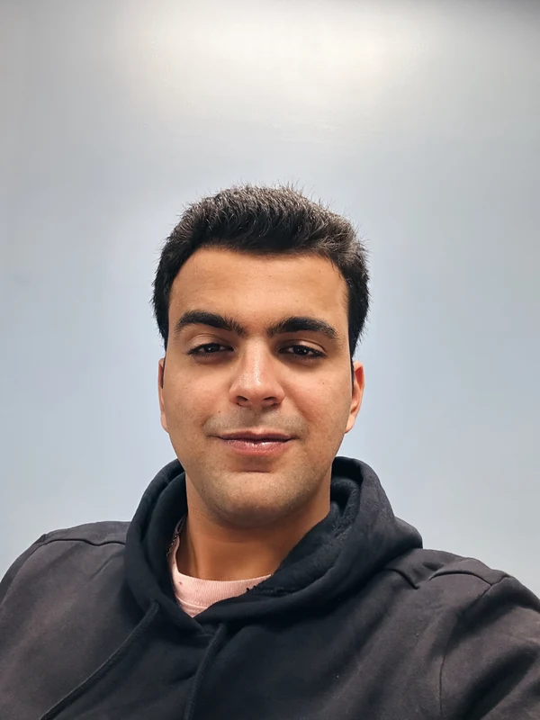

AI Engineer | Applied AI Researcher


Hi, I'm Parzon! I'm an AI engineer who builds AI systems end to end — from knowledge graphs and agentic tutoring platforms to production research infrastructure. I'm currently pursuing a Doctorate in Technology (AI Applications) at Claremont Graduate University, with research spanning Generative AI, Large Language Models, and Machine Learning for Healthcare.
I always enjoy extra-curriculars, as I'm currently the Machine Learning Club President at CGU, under the Mathematics and Data Science departments.
parzon-eyzadpur.faridani@cgu.edu
My research interests include:
Welcome to my portfolio of projects where I harness advanced machine learning and artificial intelligence technologies to tackle complex real-world problems. Here's a glimpse into some of the innovative work I've been involved in.
Aug 2025 - Feb 2026
A structured tutoring platform built on professionally curated knowledge graphs and predefined learning paths, so that guidance is constrained by syllabus-aligned data, prerequisite mappings, and expert-defined pathways rather than free-form model output. Curated knowledge graphs encode concept relationships and prerequisites; an agentic tutor stays grounded in verified curriculum source material rather than open-ended chat; the platform is multilingual (English / Hindi / Marathi) and multi-board (SSC / CBSE / ICSE) across classes 5-10; and an expert-in-the-loop curation portal means humans curate the graph, not the model.
My role: built end to end, alone.
Full title: Designing AI that Cares: Empathetic Conversational Agents as Virtual Companions to Address Loneliness. Published at AMCIS 2026 (Americas Conference on Information Systems), SIGHCI track. Authors: Armin Abazari, Samir Chatterjee, Nayana Bose, Parzon Eyzadpur Faridani.
The research was designed and led by others; I built the entire system — taking a non-technical team's product vision through to a working, evaluated, published artefact. The architecture: Hume AI (multimodal affect recognition) → Gemini Flash 2.5 (persona and therapeutic-strategy retrieval) → GPT-4 (response generation) → AWS DynamoDB (rolling conversational memory) → HeyGen (embodied avatar with synchronised speech and expression).
Evaluation: N = 13, within-person pre/post with seven days of naturalistic use. Loneliness fell significantly at 7 days (t(12) = 2.54, p = .026, d_z = 0.70) but not immediately post-session (p = .198). Social presence M = 5.42, trust M = 5.64 — the null immediate-effect result is reported alongside the significant one. Funded by the Blais Challenge Grant, Claremont Graduate University.
BabyClare was the precursor prototype to this work.
May 2024 - present (validation & clinical translation phase)
First author. SEER staging systems changed across the 2004–2020 window (AJCC 6th → 7th → SEER Combined → EOD 2018), so naive longitudinal modelling silently mixes incompatible labels. This study restricted to AJCC 6th (2004–2015) to hold label semantics constant. Dataset: 1,619 records, cleaned to 863. Built an ensemble of models with PyTorch, TensorFlow, and Scikit-learn; the best model, an SVM, achieved 81% recall on the high-risk (under 9 months survival) class, AUC 0.79.
My role: end-to-end research to production, pair-programmed with a colleague (Kaijie Yu, second author).
This is a preprint — Zenodo, DOI 10.5281/zenodo.22055220, CC-BY-4.0 — currently in a validation and clinical translation phase, not a finished, static result.
Apr 2026 - present
An internal research platform covering a survivorship-bias-free, point-in-time universe of Indian equities reconstructed from seven historical NSE indices — roughly 745 symbols in the research pool, 251 in the live universe (NIFTY 100 + MIDCAP 150). Infrastructure: 31 GB of Hive-partitioned Parquet (23 GB minute bars), a DuckDB analytical store, a PostgreSQL OLTP sidecar, and Backblaze B2 cloud archival, plus a full Indian cost model (STT, brokerage, slippage, intraday-vs-delivery classification, per-financial-year tax computation with loss set-off, ex-date dividend crediting). A paper-trading engine runs 16 strategies on cron with reconciliation, corporate-action handling, delisting watch, kill switches, and Slack health alerts three times a day. Research reads a nightly read-only snapshot, deliberately isolated from the money path.
Internal research platform. Not an investment product, not investment advice, and no client capital is involved.
Jul 2026 - present
AI platform design for a professional audio software company: multilingual semantic search and automated metadata organisation for large professional sound libraries. Engagement beginning 2026.
My role: solution architect for the engagement.
Through 2024–25 I ran three concurrent engagements across industrial AI research, university research, and healthcare data consulting.
Founder & Director 2025 - Present Pune, India
Building AI systems as engineered infrastructure — see zorashtechnologies.com for the current work.
Research Intern → Research Associate May 2024 - Sep 2025 Pune, India
Data Scientist Sep 2024 - Jan 2025
Earlier: marketing, digital strategy and business-analyst roles across four organisations, 2020–2022.
March 2024 - Present Claremont, California, USA - Spearheaded the organization of semesterly datathons, collaborating with departments of Mathematics and Data Science. The events attracted participation from students and professionals, including statisticians and doctoral candidates, challenging them to derive insights from complex datasets. The best models, judged on accuracy, precision, F1 score, and AUC/ROC, were recognized in a competitive setting. Under the supervision of Dr. Qidi Peng for sponsorship and guidance. For more details on our events, visit our Kaggle page.
January 2019 - December 2020 Pune, Maharashtra, India - Actively engaged in the Robin Hood Army's initiatives to alleviate hunger by organizing food drives and distributing meals to underprivileged communities. - Effectively coordinated with local entities to maximize resource allocation and distribution, significantly impacting the welfare of numerous individuals.
Armin Abazari, Samir Chatterjee, Nayana Bose, Parzon Eyzadpur Faridani AMCIS 2026 (Americas Conference on Information Systems), SIGHCI track
Funded by the Blais Challenge Grant, Claremont Graduate University.
Parzon Eyzadpur Faridani, Kaijie Yu Preprint · Zenodo · DOI: 10.5281/zenodo.22055220 · CC-BY-4.0
Currently in a validation and clinical translation phase.
CGU Academic Fellowship Scholarship, 2022
Outstanding Leadership Award, Entrepreneurs Club, MIT-WPU, 2021
Distinguished Speaker, CIMUN Model United Nations, 2019